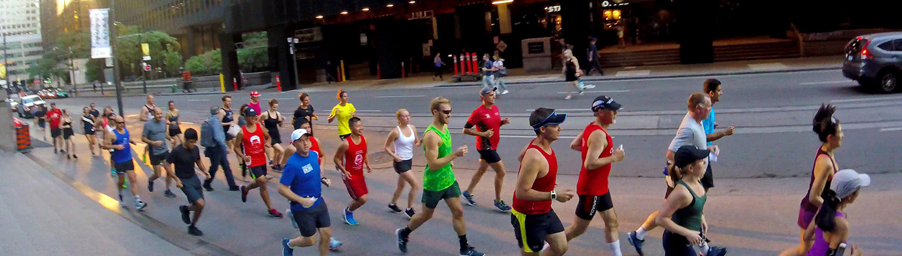
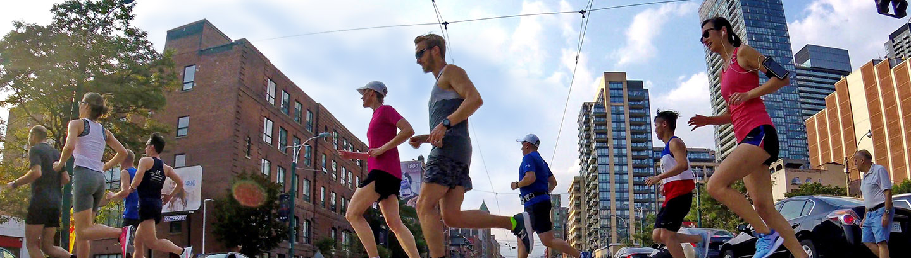

Founded in 2002, we’re one of Toronto’s best run clubs. We welcome runners of all abilities, from people training for their first 10K ever, to sub-3-hour Boston qualifiers. We’re a dedicated group who meet every week year-round, but we’re here to have fun – all those weekly miles are more fun with friends.
Plus we have special events all year long: discounted shopping days, shoe demo days, post-race socials, volunteer opportunities and more. And the second Tuesday of the month is always social night: join us for a beverage after the run. (To be honest, sometimes people skip the run and just go for the social. Hey, it happens.)
Drop in any Tuesday and join us!
Join us on our free weekly run! We meet every Tuesday at 6:05pm at the downtown Toronto Running Room, located on Yonge Street just south of King. We run all year long, rain or shine, with 7K, 10K and 13K options and people running a range of paces every week. We’re a friendly, inclusive group: all ages, genders and paces welcome. All we ask is that you can complete 7K comfortably.
We’re not just social in person! Follow us on Instagram to see all the shots Mike gets with his, uh, unique GoPro technique, join our Rats-only Facebook group to know the week’s route and learn about upcoming special events, and add your kilometres to ours and get some kudos by joining our Strava club!
Rats singlets are available for purchase. Logos on the front and the back, so people know who just passed them! Perfect for race day: lightweight and with a handy horizontal line and centre mark so you’ll never pin your number on crooked again. Light long-sleeved shirts are also available, great for those crisp fall mornings.
Email us or talk to Mike on Tuesday to learn more.